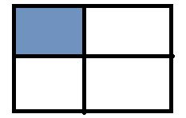
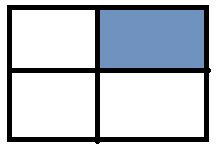
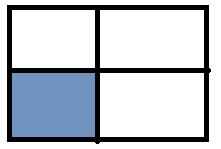
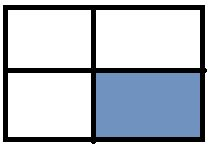

-
Задача 1. Знайти суми елементів у вказаній області (зафарбована область охоплює відповідну половину рядків і стовпців):
-
1) Номери рядків від 0 до половини, стовпці від 0 до половини.

-
2) Номери рядків від 0 до половини, стовпці від половини до кінця.

-
3) Номери рядків від половини до кінця, стовпці від 0 до половини.

-
4) Номери рядків від половини до кінця , стовпці від половини до кінця.

- 5) Суму парних рядків.
- 6) Суму непарних стовпців.
- 7) У парних рядках – непарні стовпці, у непарних – парні.
-
1) Номери рядків від 0 до половини, стовпці від 0 до половини.
-
Задача 2. Дано інформацію про прибуток К магазинів протягом тижня. Знайти:
- 1) загальний прибуток кожного магазину за тиждень;
- 2) загальний прибуток усіх магазинів по дням (загальний прибуток усіх магазинів за понеділок, за вівторок, і т.д.);
- 3) загальний прибуток за робочі дні;
- 4) загальний прибуток за вихідні дні;
- 5) максимальний прибуток за середу;
- 6) сформувати загальний список (одновимірний масив) зі значенням, які що більші за 200;
- 7) відсортувати кожен тиждень за зростанням;
- 8) відсортувати тижні (рядки) за спаданням максимального елементи у цьому тижні (рядку), тобто при порівнянні рядків потрібно порівнювати максимальні елементи у кожному з цих рядків;
- 9) упорядкувати тижні (рядки) за спаданням суми елементів у рядку (тобто при порівнянні двох рядків треба знайти суму кожного з рядків і порівнювати ці суми, на основі цих сум буде зрозуміло, який з елементів повинен іти раніше).
-
Задача 3. Користувач вводить кількість елементів. Створити масив, у якому перші 5 елементів заповнені 1-цями, а інші до кінця масиву заповнені 7-ками.